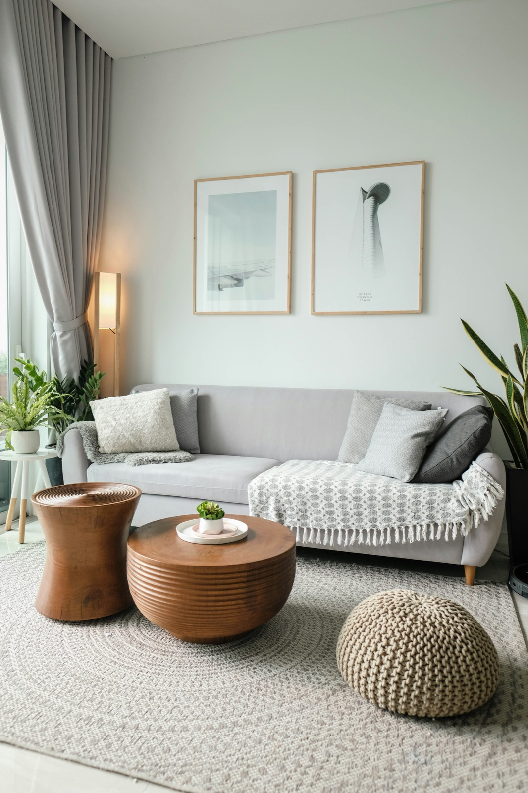
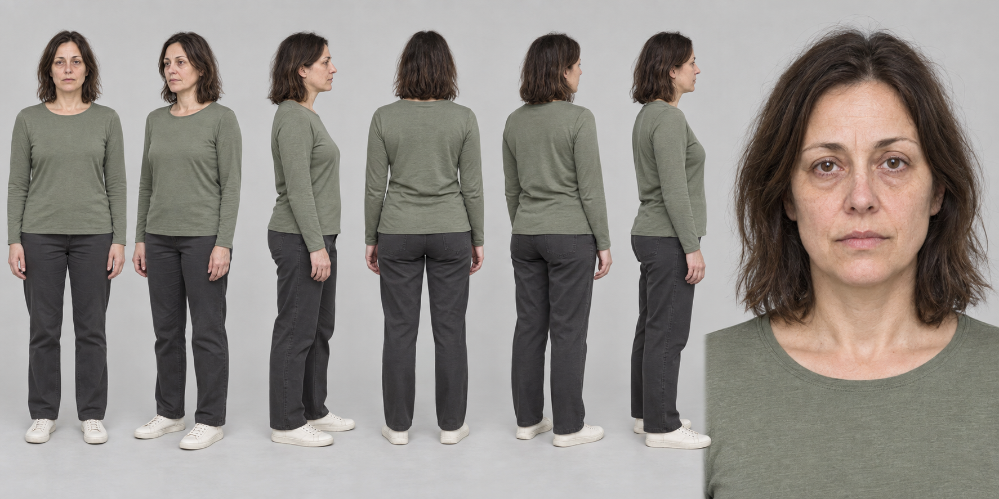
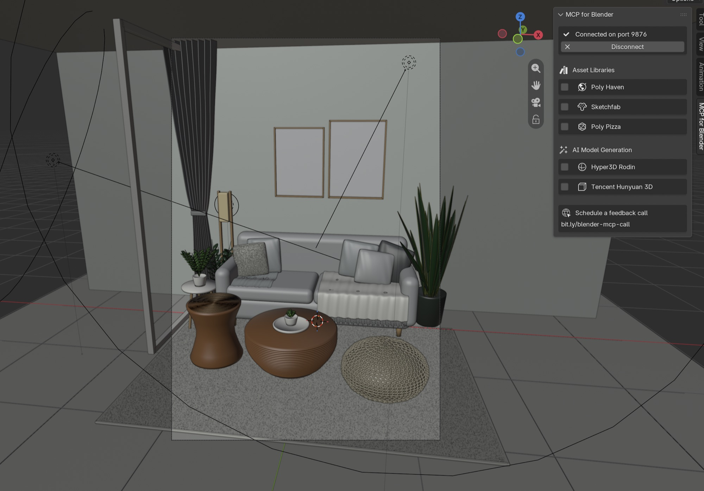
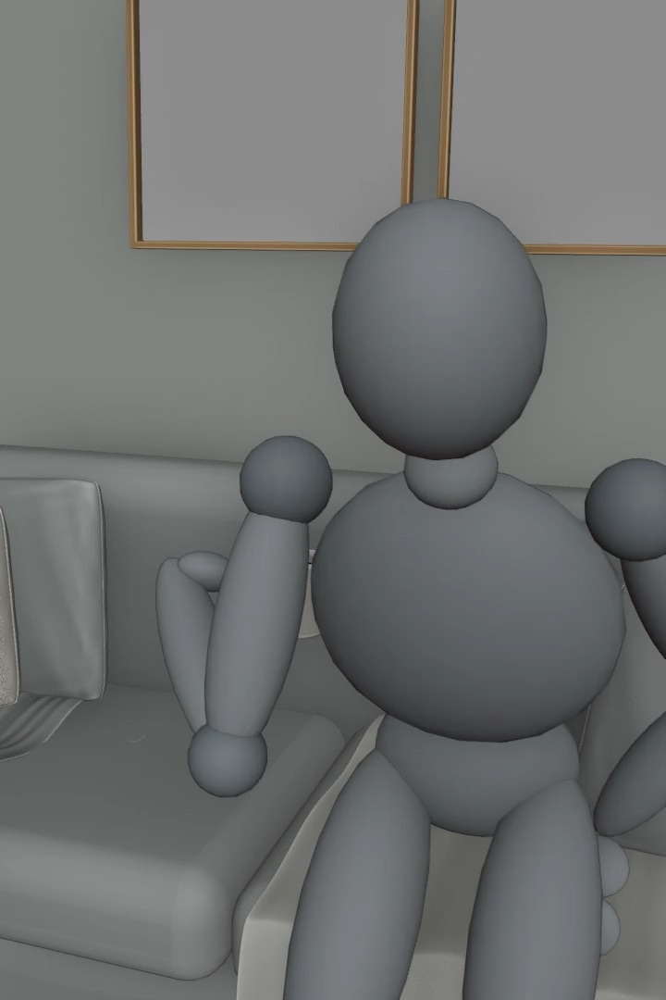
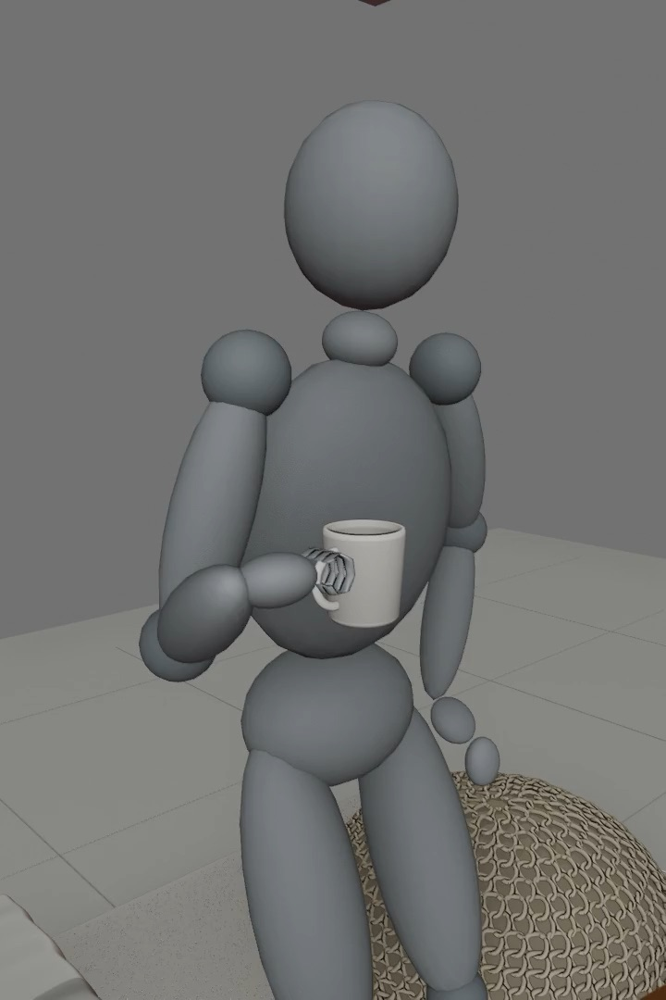
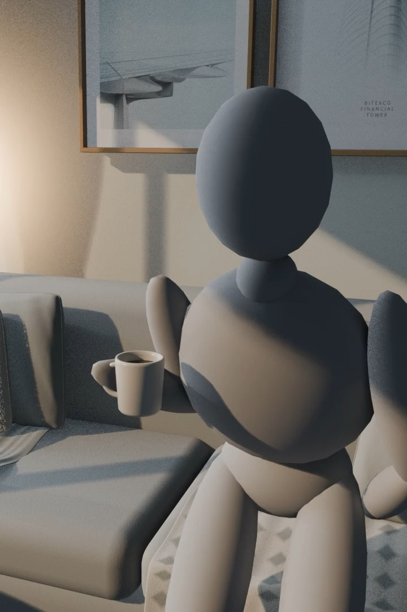
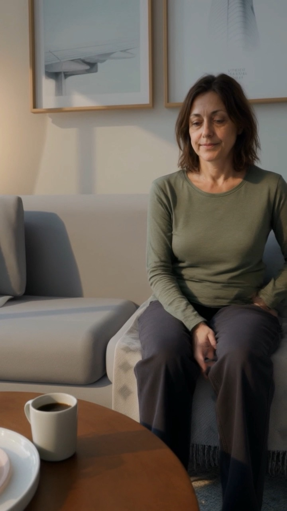
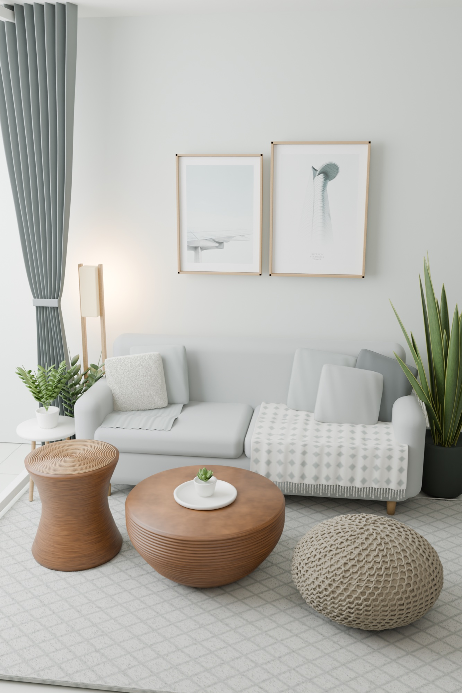
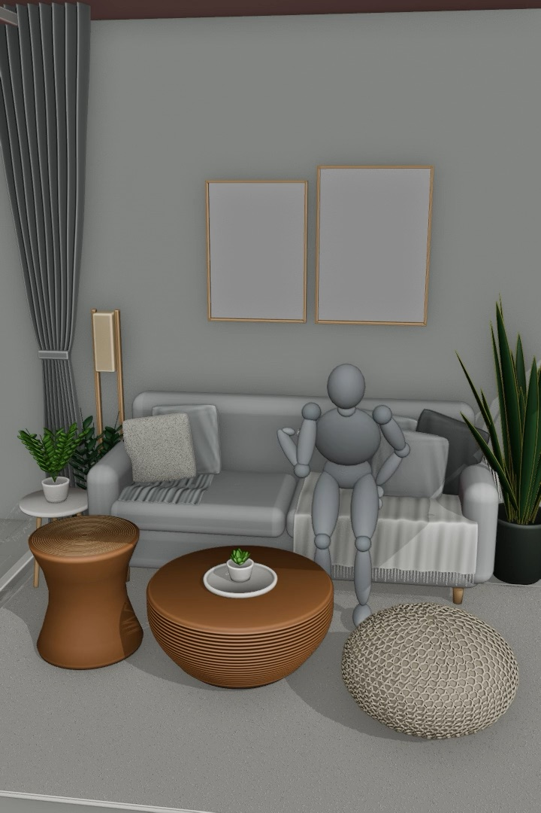

Experiment logbook — Blender · Claude Code · generative video01 / 07 · The goal
Why we ran this
Directing generative video from a 3D scene
Not to replace the cinematographer. To give them an editable tool.

Reference · real living roomenvironment.jpg
Magnific · visual replacementfinal result of the experiment

Character referencecharacter_reference_woman_40.png
The pipeline
Photographic reference
Spatial and aesthetic intent.

3D reconstruction in Blender
Editable scene built and reviewed in natural language, via Claude Code.

Dummy and action blocking
Positions, contacts and path.

Handheld or designed camera
A phone-shot take, or a camera built into the scene.

Reference render
The base image handed to the AI.

Visual replacement with AI
Identity, materials and realistic finish.
in progress
Local iteration in ComfyUI
Local control for new tests.
next
Scene in Unreal Engine
Real-time render; camera, light and path in-engine.
The same scene: reference photo and rebuilt 3D
Photographic referenceenvironment.jpg→

3D reconstruction in Blenderautomatic render of the scene
Blender + MCP · port 9876
From the photo, Claude Code rebuilt the living room in Blender over an MCP connection: geometry, scale, materials, camera and light, in natural language. The scene stays editable and gets fixed without leaving the workflow.
Blender as a control space
Blocking · mid-afternoon coffeecafe_media_tarde_blocking.mp4Environment on its owntest_manual_entorno_completo.mp4Simplified dummytest_manual_dummy_brazo_suave.mp4
Blender keeps what a video generator usually can't offer: editable geometry, scale, paths, positions, light and camera.
Claude Code automated building the living room, the materials, the dummy, the cameras, the renders and the fixes.
Camera as a human gesture
VirtuCamera turned the phone into a virtual camera. The take could be recorded by hand inside the scene, like a camera operated by a person.
The phone defines the camera gesture.
Blender keeps the path and lets you repeat it.
The camera doesn't have to be generated from scratch in Magnific.
Handheld take · VirtuCameratest_manual_1.mp4Camera designed in the scenecoffee_advert_camera.mp4
What worked and what held the result back
Worked
Fast reconstruction of an editable scene.
Control over camera and composition.
Character and environment references with a consistent look.
Iteration between 3D and video generation.
Held back
The generated video inherited some of the dummy's stiffness.
Prompts don't fix an unnatural body performance.
Hands, contacts and weight shifts are still fragile.
Visual replacement doesn't stand in for a convincing motion base.
Magnific · final resultmagnific_transform…1lPTYjJr4r.mp4
From the Magnific render to local control
First test · Magnificmagnific_use-vid1-as-the-source…VXaafliMMU.mp4Final render · Magnificmagnific_transform…1lPTYjJr4r.mp4

Blocking in Blendersource scene
We already have a final render in Magnific. It confirms the pipeline can carry character and environment into a realistic image.
Now ComfyUI: iterate locally, more control over each test and less dependence on credits.
Next Take the 3D scene into Unreal Engine: real-time render, with camera, light and path inside the engine.
3D works as a shared language between directing, camera, animation and video generation.
Credits
Miguel Ángel Ballesteros
Alba Díaz
Teyo Cuadrado
An experiment with Blender, Claude Code and generative video.